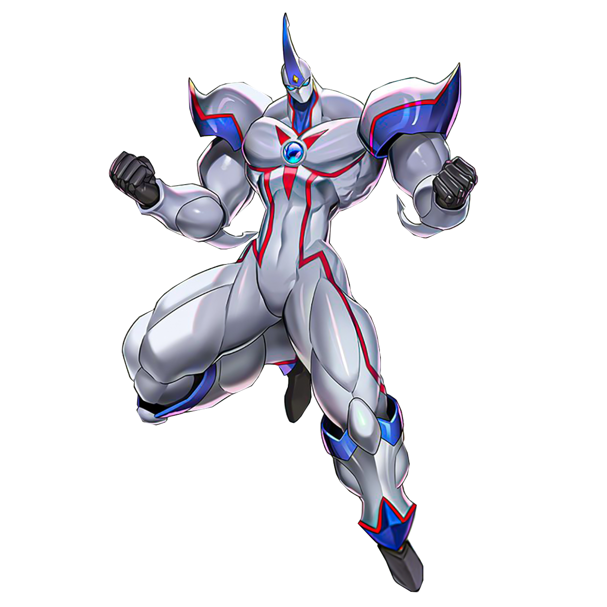

Elemental Hero Neos Resume

Summary
Elemental Hero Neos is a level 7 fusion monster with 2500 attack and 2000 defense.
He is the main protagonist of the Yu-Gi-Oh! GX series and is the signature monster of Jaden Yuki.
Neos is a versatile monster that can be used in a variety of decks and strategies.
He has several powerful fusion monsters that can be summoned using his effect, such as Elemental Hero Neos Knight and Elemental Hero Divine Neos.
Neos is a fan favorite among Yu-Gi-Oh! players and has appeared in multiple video games and other media.
Education
- Elemental Hero Neos Academy
- Elemental Hero Neos Duel School
- Elemental Hero Neos University
\
Work Experience
- Defeating the Shadow Riders
Season 1 2005
- Defeated Kagemaru
- Defeated Nightshroud
- Defeated Camula
- Defeated Tania
- Defeated Don Zaloog
- Defeating the Society of Light
Season 2 2006
- Defeated Sartorius
- Defeated The D
- Defeated Aster Phoenix
- Defeated Sarina
- Defeated Chazz Princeton
- Defeating the Yubel
Season 3 2007
- Defeated Yubel
- Defeated Adrian Gecko
- Defeated Jesse Anderson
- Defeated Axel Brodie
- Defeated Jim Crocodile Cook
Skills
- Fusion Summoning
- Elemental Hero Support
- Neos Fusion
- Elemental Hero Neos Knight
- Elemental Hero Divine Neos
Certifications
- Elemental Hero Neos Master
- Elemental Hero Neos Fusion Expert
- Elemental Hero Neos Duelist
Contact
Hobby